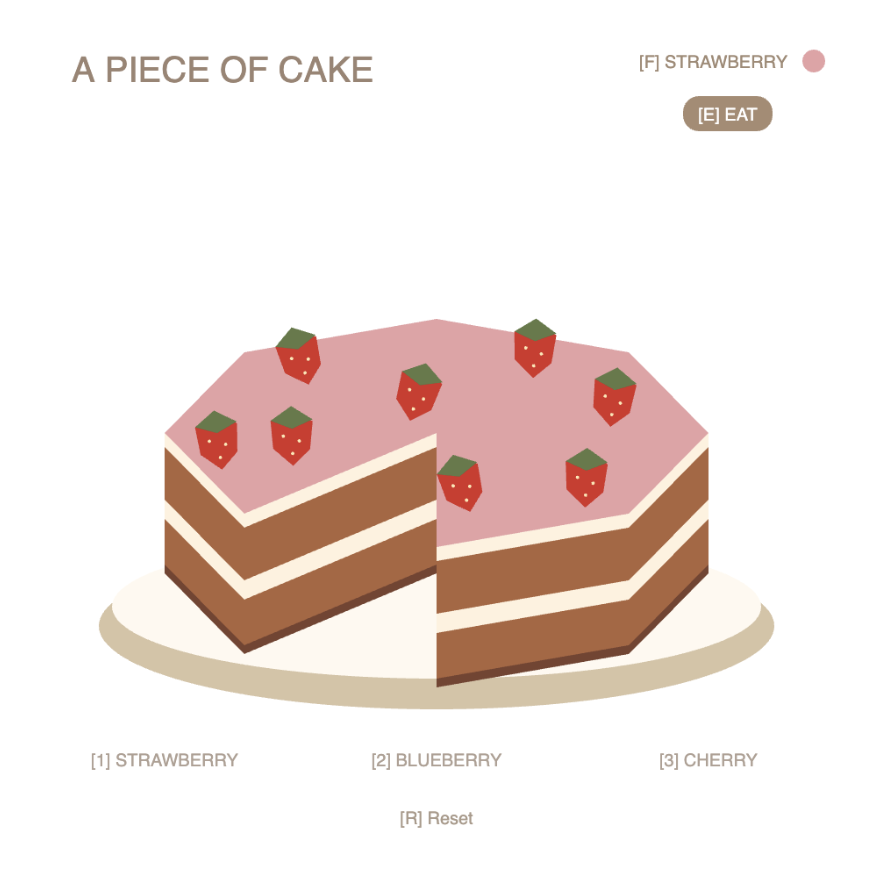
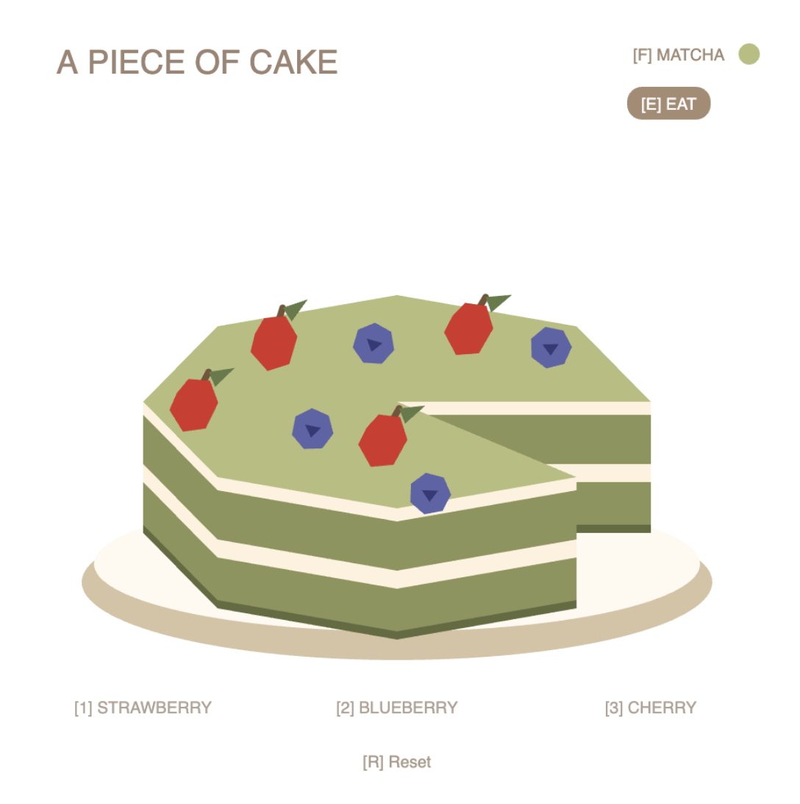
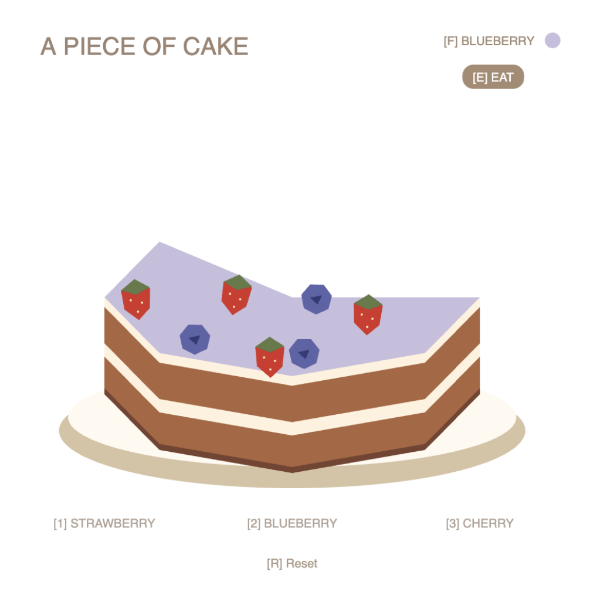

For this week's sketch, I initially thought about creating an interactive cookie that users could gradually eat by clicking on it. However, I wanted to expand the idea to include more decorative interactions rather than just removing pieces, so I ended up designing a cake instead. I liked how a cake would allow users to experiment with different flavors and toppings while still keeping the original idea of eating something. I also wanted to challenge myself to create a three-dimensional appearance using basic 2D shapes. I decided on a geometric illustration style with muted colors to keep the design simple and playful.
Users can choose between three fruit toppings, change the cake's flavor, and switch between decorating and eating modes. I liked the contrast between these two modes because one adds to the cake while the other takes something away. I used push() to add decorations, splice() to remove toppings and slices, and includes() to check which slices were still present. I also created a Cake class to organize how the cake is drawn and how individual slices behave.
One of the biggest challenges was figuring out how to create the cake's perspective, especially when individual slices were removed. At first, some of the layers overlapped awkwardly, and the cake didn't look quite right after eating certain slices. This made me realize how important drawing order is when creating the illusion of depth with 2D shapes. I also experimented with the interface and interactions throughout the process. Initially, I included a dragging feature for the toppings, but I eventually removed it because I felt that clicking to decorate was more straightforward.
I used an LLM to help me work through some of the more complicated parts of the code, especially the geometry calculations using sin(), cos(), and atan2(). I also used it to troubleshoot the overlapping cake layers and organize the array interactions. I learned about indexOf(), an array method I hadn't used before, which helped me find the position of a specific cake slice in the array so I could remove it using splice(). Throughout the process, I continued making adjustments to the visual design, colors, layout, and interactions based on what I felt worked best for the sketch.


